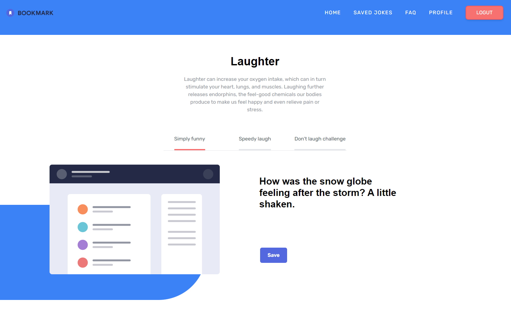
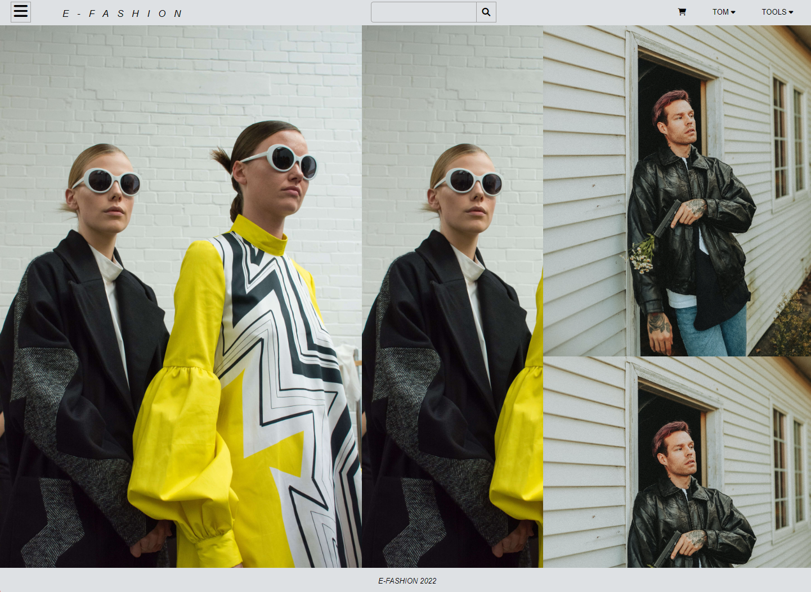
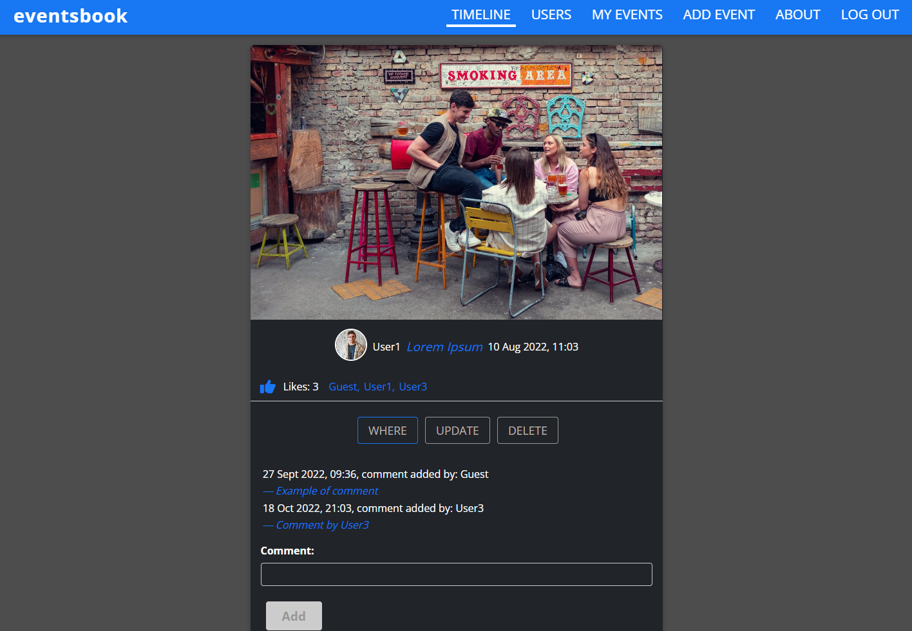
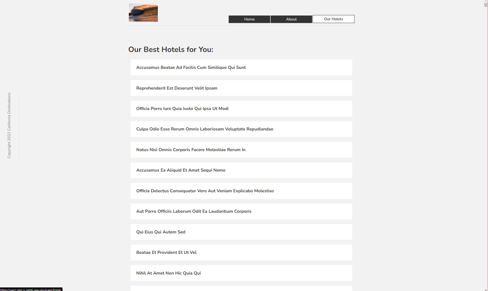
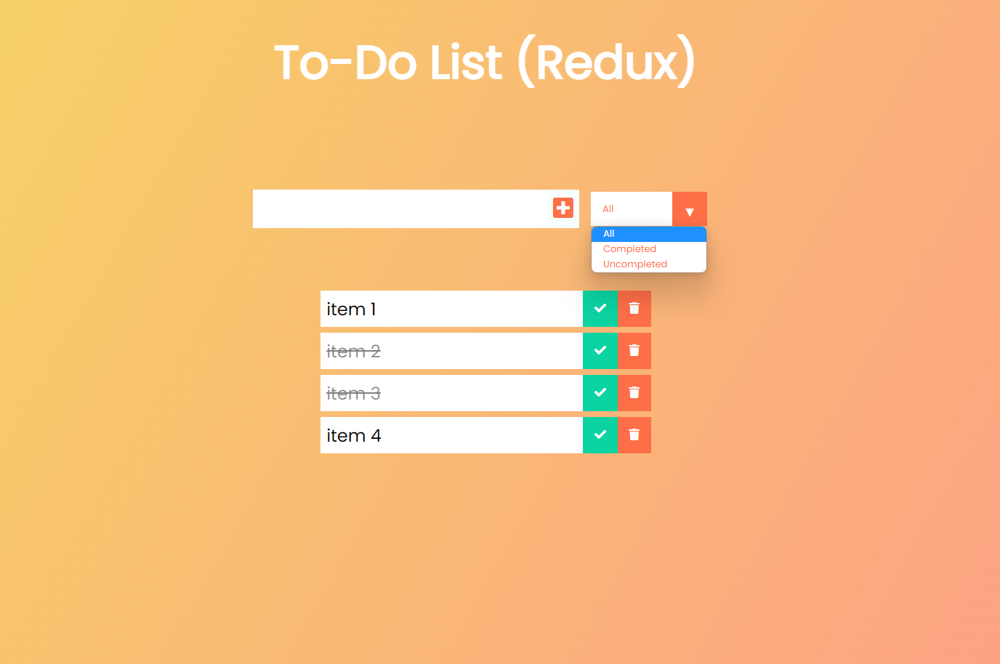
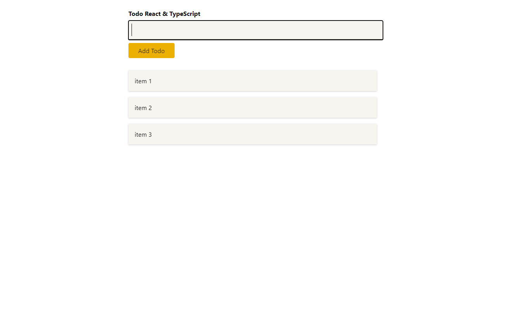
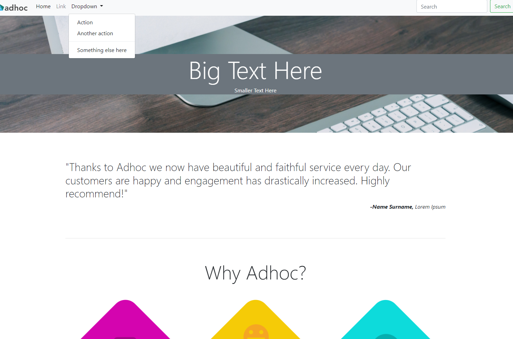
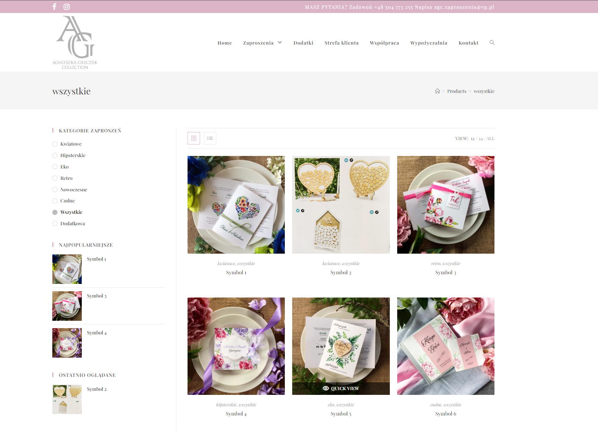

jokes manager (Next.js, Tailwind)
Generate a joke and save it on your account. User login/create account interface. User account managment options. It is a fullstack Next.j app. Static Site Generation (SSG), Incremental Static Regeneration (ISG) and Server Side Rendering (SSR) in use; NextAuth.js for authentication and authorisation (routes protection on the client and on the server side); MongoDB for data storage; React Context for global state managment used in user's notifications, Tailwind for styling.
Next.js, NextAuth.js, Tailwind, MongoDB, Vercel

e-fashion (MERN app)
A fullstack app, an online clothing store with user authentication, sandbox PayPal payment, MongoDB and Amazon Web Services used for storage .Page pagination. Filters to search for products, fiters can be cross-referenced to narrow down the searches. Ratings and cusomers reviews. 'TOOLS' in the menu provides options for admin management of products, sales ad more. Redux used for state managment. All newly created users have admin access to all app's functionalities.
React.js, Redux, Node, Express.js, MongoDB, Amazon Web Services API, Firebase and Render for deployment

eventsbook (MERN app)
A fullstack app, a social media platform where users can log in/create an account, upload photos/create posts (about upcoming social events) and add likes and comments. Users can also tag their event's location on the map thanks to Google Maps Platform API or change their passwords with the use of the SendGrid API. User authentication with jwt token created on the backend, pictures and data stored respectively on Amazon Web Services and MongoDB.
React.js, Node, Express.js, MongoDB, Amazon Web Services API, Firebase and Render for deployment

california destinations (Next.js)
This project is a demo tourist website with a list of hotels to pick from. It explores many Next.js features like how to make pages and routes, how to link between them, how to use styles, how to create a Layout component used across all app like Navbar or Footer, how to use static assests like images, how to insert different metadata to each page, how to fetch data on the server side (from JSONPlaceholder APIs) with Next.js build in functions: getStaticProps() and getStaticPaths() and, finally, how to deploy the app on Vercel.
React.js, Next.js, Vercel

a to-do list (Redux)
This project is a to-do list built with React and Redux library. Tasks on the list can be marked as completed or they can be deleted. The list can be sorted as follows: it can display all tasks, only completed tasks or only uncompleted tasks. Tasks are being saved in localStorage. Exploring the Redux library while building this app was great fun.
HTML, CSS, React.js, Redux

a to-do list (TypeScript)
This TypeScript in React To-Do list allows us to add tasks to our list and then delete them upon clicking on them. It explores all different types with emphasis on generic ones. The app was built as a finishing project of the Udemy course 'Understanding TypeScript".
HTML, CSS, React, TypeScript

adhoc (Bootstrap)
This project is using Bootstrap for creating a clear layout and polished style of a demo commerce website. The website is fully responsive with a dedicated mobile navbar that opens with the 'hamburger' icon. It also features a photo slide carousel at the bottom of the page.
Bootstrap
visit japan (SASS)
This project is only a touch on SASS and an attempt to familiarize with its concepts. Variables, lists, nestings, mixins (include@), selectors, extend@, simple functions like @each and index(), organizing our scss files structure with partials imported into the main scss file - all that is being used to create a parallax effect on a demo tourist website.
HTML, CSS, SASS
